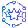
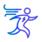
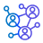
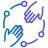
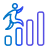

Library of Best Practices and
Frameworks
Drafts
Here you will find current recognition solutions as examples to your inspiration and drafts for your customized Recognition Program divided into 4 groups:
- Project / Account
- Unit / Practice
- Location
- Role
Project / Account
Example 1
AXS Project

Example 2
Thompson Reutes Account
What is spot bonus?
Who can be nominated?
What are nomination criteria?
- A team member demonstrated the desire and ability to do the work that goes far beyond their direct responsibilities/seniority level within a certain month (so called "extra mile");
- At the same time the primary project work is expected to be done completely and in time;
- The impact of the achievement is significant and must have measurable project value;
- The achievements which affected more people and/or took much time to implement have a higher chance to be approved.
What can’t be a reason for on spot bonus?
- Planned overtime which is compensated according to EPAM policies,
- Team achievements – in this case project team lead could request a team building to recognize team efforts or discuss another option with DM,
- Good performance of everyday tasks in frames of your qualification and project role – will be considered by DMs during quarterly performance evaluation.
How to nominate?
You may use one of the following ways:
a) Reply to a monthly "On Spot Bonus collection phase start" e-mail - if you want to nominate yourself (Please, don’t be shy to tell us about your achievements!);
Framework Draft for Project/ Account Recognition Program
Guiding Star
Acknowledging extra-mile effort and positive (and lasting) impact with the assignment.
Process and delivery related to the current project/stream:
- Technology/ Management Excellence (People who exceed expectations from their current title);
- Running project specific initiative;
- Having outstanding results by applying global initiative;
- Development of framework/ solution matching newest trends that accelerate the delivery process
- Client & business related impact within the assigned account:
- Up-sales, helping extend with the current and grow account;
- Client relationship development & Expansion (Account/ Project heroes who contributed to process driving and transformation leading to raising customer trust)
Thank you for leading a positive impact on the work we do!
EPAM Project/ Account management
Software Craftsman
Acknowledging person’s outstanding skills are demonstrated at certain occasions:
- Development of new expertise (for example), including certifications and trainings;
- Resolving complicated roadblock with an elegant workaround demonstrating deep knowledge of tools and technology;
- Tool, framework, solution creation/ improvement which helped to optimize the work;
- Studying materials creation/ optimization for mentoring programs, educational programs, including e-learning options;
- Mentoring for hot or rare skills
Notes: focused on spectacular singular occasion, it’s more about immediate
You are true guru and master of the skill!
EPAM Project/ Account management
Delivery Contributor
Acknowledging contribution to reaching significant delivery milestones and specific outcome:
- Associated with successful delivery (big/important release), awarded after the fact
- Example cases for nomination:
- A successful release, excellent feedback from the customer is received (please, do not forget to attach a confirmation), certain persons are outlined and given praises;
- Several SCRUM sprints conclude an important business feature. There’re people that constantly show outstanding velocity;
- Any other occasions as deemed significant by DM that outline certain person’s contribution to team’s productivity and eventual successful delivery
Thank you for moving and shaking our project!
EPAM Project/ Account management
Strategic Decision-Maker

For individuals who consistently demonstrate the ability to think critically, apply sound judgment, and make smart decisions that drive the success of the project/ account. These individuals possess the skills to analyze information, assess risks, and consider multiple perspectives, enabling them to make informed and strategic choices. Their astute decision-making skills result in positive outcomes, increased efficiency, and contribute to the overall growth and success of the project/ account.
Congratulations on your well-deserved Strategic Decision-Maker nomination! Your exceptional ability to think critically, apply sound judgment, and make smart decisions has been instrumental in driving our project's success. Thank you for your invaluable contributions and for consistently demonstrating your astute decision-making skills. Your ability to make smart decisions has truly helped propel our project forward.
EPAM Project/ Account management
Solution-driven Innovator
For individuals who proactively resolve challenges by taking initiative to identify issues, anticipate potential problems, and implement innovative solutions before they impact our project/ account workflow. These individuals demonstrate transparency in defining problems, seeking help when needed, and providing timely solutions. Their proactive approach enhances efficiency, fosters collaboration, and drives positive outcomes for EPAM and our project/account in particular.
Congratulations on receiving the Solution-driven Innovator nomination! Your proactive approach to resolving challenges is truly commendable. Your transparent communication in problem definition, willingness to seek assistance, and dedication to providing timely solutions are highly valued and appreciated. Thank you for your outstanding contributions and for driving positive outcomes that benefit project/account.
EPAM Project/ Account management
Customer Focus
Acting actively in customer’s interests; Achieving an important goal for a customer by going beyond the responsibilities scope; Establishing trustful relationship with a Customer.
We are delighted to recognize your outstanding customer focus. Your active engagement in customer interests, achievement of vital customer goals, and establishment of trustful relationships have truly set you apart. Thank you for your relentless dedication to our customers' success.
EPAM Project/ Account management
Focus on Team
 For facilitating people development and success and for fostering team spirit
Congratulations! Your commitment to facilitating people development and fostering team spirit is commendable. Your efforts in nurturing a positive team environment and ensuring everyone's success have not gone unnoticed. Thank you for your exceptional dedication to our team's growth and unity.
EPAM Project/ Account management
Curious Learner
To individuals who demonstrate a constant thirst for knowledge and a dedication to studying and investigating new knowledge and technologies that contribute to the success of projects. These individuals go above and beyond by seeking out opportunities to expand their horizons and share their newfound knowledge with their team, fostering innovation and growth.
Thank you for embodying the spirit of a Curious Learner. Your insatiable thirst for knowledge and commitment to staying at the forefront of industry advancements have greatly contributed to the success of our projects. Your curiosity and dedication to widening the horizons of knowledge have had a profound impact on our team and the overall prosper of the project. Keep up the excellent work and continue to inspire others with your passion for learning. Congratulations on earning the Curious Learner badge!
EPAM Project/ Account management
Project/ Account Welcome
For the warm welcome words for the employee who has recently joined the project/ account
A heartfelt welcome to our project/account at EPAM! We're thrilled to have you on board and look forward to achieving great things together. Here's to a successful journey with us!
Peer to peer
Project/ Account Thank you
For expressing any type of appreciation for any reason among peers.
Thank you for making our project/account a better place. Together, we achieve remarkable things. Keep up the fantastic work!
Peer to peer
Project/ Account Helping Hand
For appreciating any help from the colleague, who supported besides his/her direct responsibilities.
I wanted to express my heartfelt appreciation for the incredible support you provided recently. Your willingness to lend a helping hand beyond your direct responsibilities did not go unnoticed. Your dedication to teamwork and your willingness to assist others truly exemplify the spirit of collaboration within our project/account.
Peer to peer
Fantastic Teammate
Peer to peer recognition from any employee to any employee for any kind of support and help without restrictions and review. Feel free to recognize your teammates for any reason you think will empower them:
- For great teamwork and incredible results;
- For valuable help and taking care;
- For making something that impressed the employee’s colleagues;
- For being supportive and ready to help always when needed
We are proud to have you on our team. Your contributions and dedication are highly valued!
Peer to peer
Project/ Account Congratulation
Badge for project/ account celebrations
Heartful congratulations! Let’s this day be amazing and unforgettable!
Peer to peer
04Role
Recognition program for Resource Manager role
The primary objective of the Resource Manager Recognition Initiative is to acknowledge and celebrate the significant contributions of Resource Managers to the organization.
Key Benefits:
- Motivation and Promotion: Recognizing Resource Managers' impact on the company fosters motivation and encourages their continuous dedication to the role.
- High-Potential Visibility: The initiative highlights high-potential Resource Managers, giving them the opportunity to showcase their exceptional skills and commitment to the organization.
- Annual Bonus Campaign Integration: Nominations and recognition received through the initiative can be taken into consideration during the annual bonus campaign, adding an additional layer of evaluation for performance recognition and rewards.
- Expressing Gratitude: The recognition program serves as a meaningful way for the organization to express its sincere appreciation for the hard work and dedication of Resource Managers.
Through this initiative, the organization aims to create a culture of appreciation and encouragement, empowering Resource Managers to continue making a significant impact on the company's growth and success.
To ensure comprehensive coverage of contributors and facilitate a more systematic approach to recognizing Resource Manager achievements, the Resource Manager Recognition Initiative is divided into two distinct campaign types: Ongoing and Yearly.
By employing these two distinct recognition campaigns, the Resource Manager Recognition Initiative aims to create an inclusive, balanced, and comprehensive system to appreciate and motivate Resource Managers. This approach encourages continuous dedication and highlights exceptional achievements that contribute to the organization's overall growth and success.
Ongoing campaigns
The Ongoing Recognition Campaign aims to regularly celebrate Resource Managers' continuous contributions and impact on the organization. By providing periodic recognition, this campaign encourages Resource Managers to maintain their dedication, fosters a supportive work environment, and sustains motivation throughout the year.
Description:
The RM Rising Star award recognizes exceptional early-stage performance by Resource Managers who have been in their role for less than a year. This award celebrates these individuals' swift transition into the role, commending their dedication, adaptability, and the positive impact they have made within a short period. By acknowledging emerging talent, the RM Rising Star award supports the growth and development of new Resource Managers, fostering a strong foundation for their future success in the organization.
Description:
The RM Star award honors outstanding performance by Resource Managers who have been in their role for more than one year and have consistently demonstrated exceptional results and a proactive attitude in their work. This award acknowledges their sustained commitment to excellence, going above and beyond their regular duties, and contributing significantly to the organization's success. By recognizing the achievements of these experienced Resource Managers, the RM Star award serves to encourage continued dedication and aspiration for excellence, showcasing their accomplishments as a benchmark for others within the company.
Yearly campaigns
The Yearly Recognition Campaign is designed to celebrate the most outstanding Resource Manager contributions and demonstrate their impact on the organization over an entire year. This campaign focuses on high-impact accomplishments and serves to elevate the recognition of exceptional Resource Managers.
Description:
The RM Role Model award distinguishes exemplary Resource Managers who not only achieve significant results, but also set a high standard for their peers, other employees, and active contributors within the organization. These individuals showcase exceptional leadership, teamwork, and a positive attitude that inspires and motivates those around them. By honoring these outstanding Resource Managers, the RM Role Model award reinforces the importance of embodying the organization's values and commitment to excellence, encouraging others to follow in these role models' footsteps and further contribute to the organization's success.
Description:
The RM People's Choice award celebrates the Resource Manager who receives the highest number of votes from their peers, colleagues, and team members in a voting competition. This award recognizes the winning individual's ability to garner respect, admiration, and support from those within the organization, showcasing their popularity, impact, and positive influence on their teams. By acknowledging the winner of the voting competition, the RM People's Choice award highlights the importance of peer recognition and endorses the valuable connections and relationships the winning Resource Manager has fostered within the company.
Framework Draft for Role Recognition Program
Excellence in Communication
Acknowledges an individual who excels in clear, transparent, and effective communication, ensuring seamless information flow within the department and the organization. Management appreciates the employee's communication skills, which enhance departmental efficiency and coordination.
Your exceptional skills in clear, transparent, and effective communication have ensured seamless information flow within our department and the organization. Your ability to foster understanding, enhance efficiency, and improve coordination through your communication is truly commendable. Your dedication to transparent communication has contributed significantly to our team's success.
Role owner/ dedicated reporter
Mentorship Champion
Recognizes an individual who demonstrates outstanding leadership qualities and serves as a mentor, guiding and inspiring fellow team members. Management acknowledges the employee's leadership and mentorship, which contribute to the growth of the team and the department.
Your outstanding leadership qualities and your role as a mentor, guiding and inspiring fellow
team members, have made a significant impact on our team's growth and development.
Your dedication to mentorship and your ability to inspire others have not gone unnoticed.
Your guidance has contributed immensely to the professional development of your colleagues
and the overall success of our team.
Role owner/ dedicated reporter
Innovative Strategy Implementer
Celebrates a manager who successfully implements innovative strategies, leading to departmental growth, improved processes, and enhanced productivity.
Your ability to successfully implement innovative strategies has led to remarkable departmental growth, improved processes, and enhanced productivity. Your strategic vision and the impact of your innovative initiatives are truly commendable. The positive changes you have introduced have not only reshaped our department but have also contributed significantly to our organizational success.
Role owner/ dedicated reporter
Change Management and Adaptability
Commends a manager who effectively navigates organizational changes, promotes adaptability within the team, and ensures seamless transitions during periods of change.
Your ability to effectively navigate organizational changes, promote adaptability within the
team, and ensure seamless transitions during periods of change has been invaluable to our
department.
Your leadership during times of change has created a positive and resilient work
environment. Your dedication to ensuring smooth transitions and fostering adaptability among
the team is commendable and greatly appreciated.
Role owner/ dedicated reporter
Performance Excellence and Results
Acknowledges a manager who consistently delivers outstanding performance, achieves departmental targets, and contributes significantly to the organization's overall success.
Your consistent delivery of outstanding performance, your ability to achieve departmental
targets, and your significant contributions to the organization's overall success have not
gone unnoticed.
Your dedication and drive have set a high standard for excellence within our team. Your
results-oriented approach and continuous commitment to exceeding targets have had a profound
impact on our department and the organization as a whole.
Role owner/ dedicated reporter
Team Collaboration and Synergy Master
Celebrates a manager who promotes collaboration among team members, fosters synergy within the department, and ensures cohesive teamwork, leading to exceptional outcomes.
Your ability to promote collaboration among team members, foster synergy within the
department, and ensure cohesive teamwork has led to exceptional outcomes for our team.
Your leadership in creating a collaborative work environment has not only strengthened our
team dynamics but has also significantly enhanced our overall productivity and achievements.
Your dedication to fostering synergy and teamwork is truly commendable and greatly
appreciated.
Role owner/ dedicated reporter
Curious Learner
To individuals who demonstrate a constant thirst for knowledge and a dedication to studying and investigating new knowledge and technologies that contribute to the success of EPAM. These individuals go above and beyond by seeking out opportunities to expand their horizons and share their newfound knowledge with their team, fostering innovation and growth.
Thank you for embodying the spirit of a Curious Learner. Your insatiable thirst for knowledge and commitment to staying at the forefront of industry advancements have greatly contributed to the success of EPAM. Your curiosity and dedication to widening the horizons of knowledge have had a profound impact on our team and the overall prosper of the EPAM. Keep up the excellent work and continue to inspire others with your passion for learning. Congratulations on earning the Curious Learner badge!
Role owner/ dedicated reporter